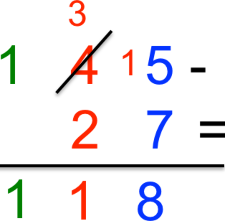
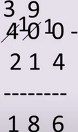

Sottrazione in colonna
In questo articolo è stata descritta la procedura per sottrarre due numeri naturali. Nell’esempio mostrato il minuendo (145) ha tre cifre ed il sottraendo (27).
La sottrazione 5 – 7 non può essere fatta perché il primo numero è minore del secondo. In tal caso bisogna prendere una decina dalla seconda colonna e 5 diventa 15. Si ha quindi che 15 – 7 = 8 e il risultato si scrive sotto la colonna delle unità, mentre la decina che abbiamo preso in prestito fa diminuire di 1 la seconda cifra del minuendo, che da 4 diventa 3.
Eseguiamo in una colonna le seguenti sottrazioni: 8294 − 417. Procediamo così:
e 400 − 214
